Planning Context
어떤 기획이었나
- 퀘스트는 메인 화면, 목록 팝업, 상세 진행 상태가 서로 연결되어 있어 정보 계층이 흔들리면 진행 목표를 놓치기 쉽습니다.
- 시나리오, 명성, 제비상회, 킹덤 등 퀘스트 종류가 나뉘어 목록 분류와 상태 표기가 중요했습니다.
ProjectN · Quest UX
메인 퀘스트 패널과 퀘스트 목록 팝업의 정보 구조, 진행 상태, 진입 흐름을 정리한 UX 개선 사례입니다.
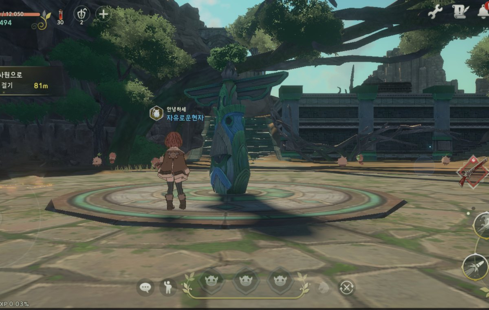
Planning Context
Process
Deliverables
Result
퀘스트 종류와 진행 상태를 화면별로 분리해, 유저가 현재 목표와 다음 진입 지점을 더 빠르게 확인하도록 정리했습니다.
Deliverable Captures
원본 문서는 포함하지 않고, 포트폴리오 확인용으로 일부 페이지만 이미지화했습니다. 슬라이드 마스터/상하단 영역은 흐림 처리했습니다.
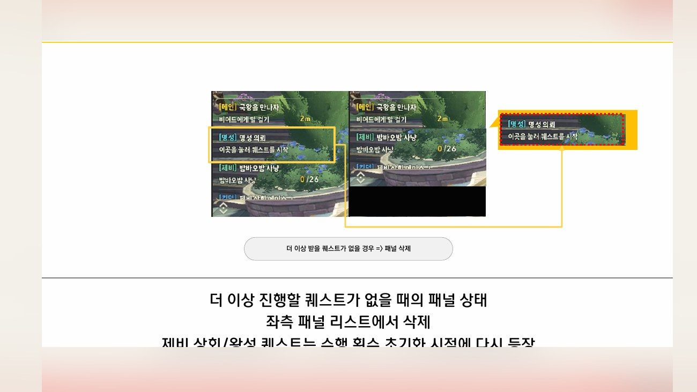
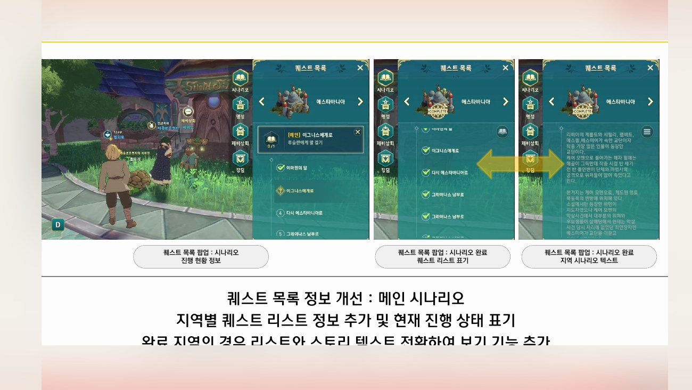
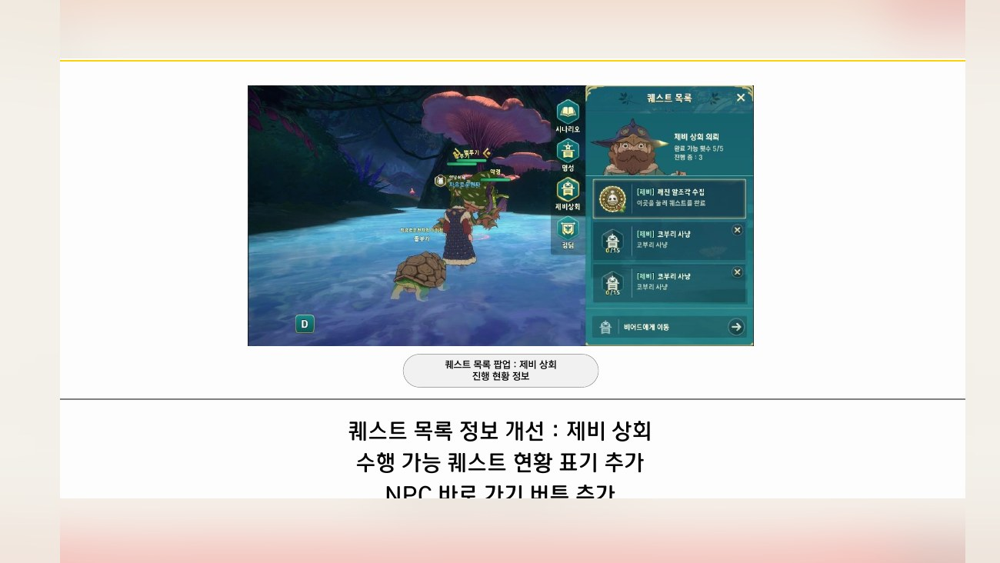
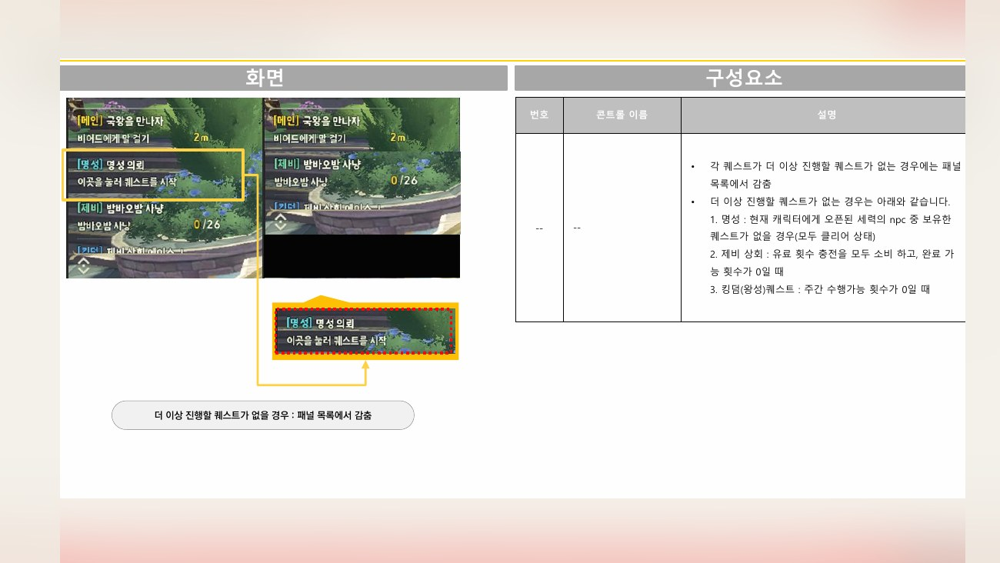
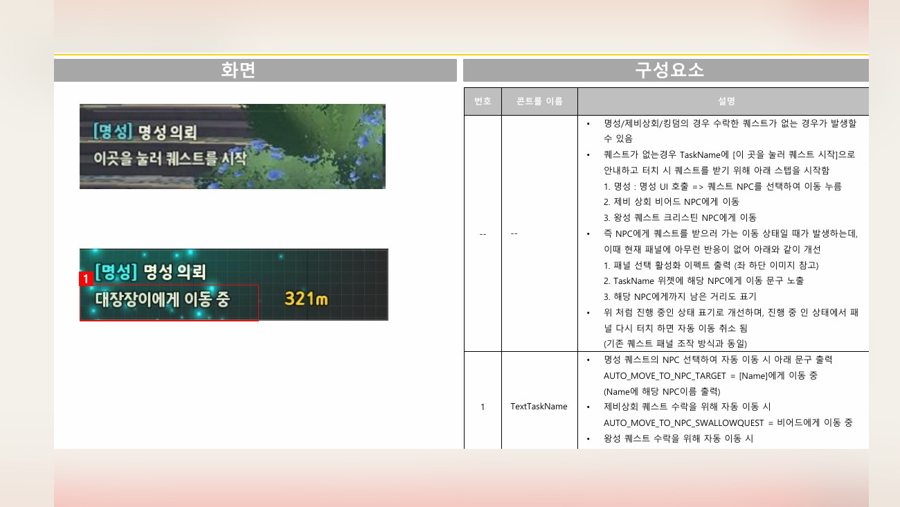
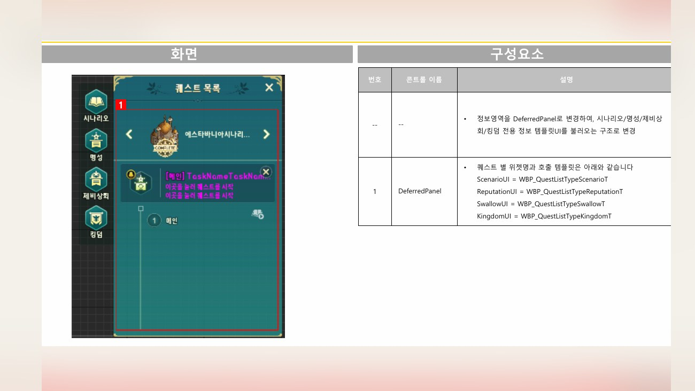
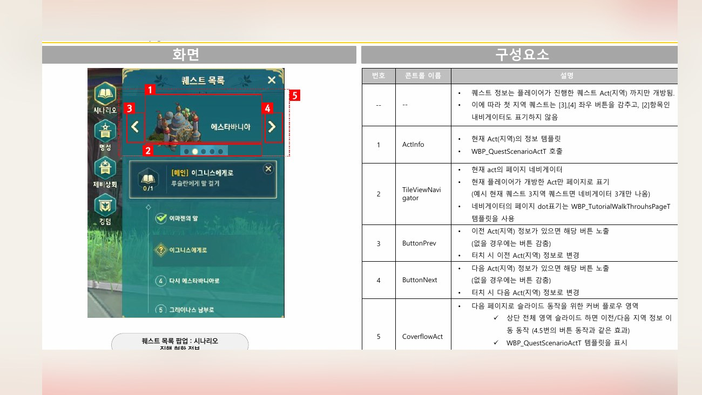
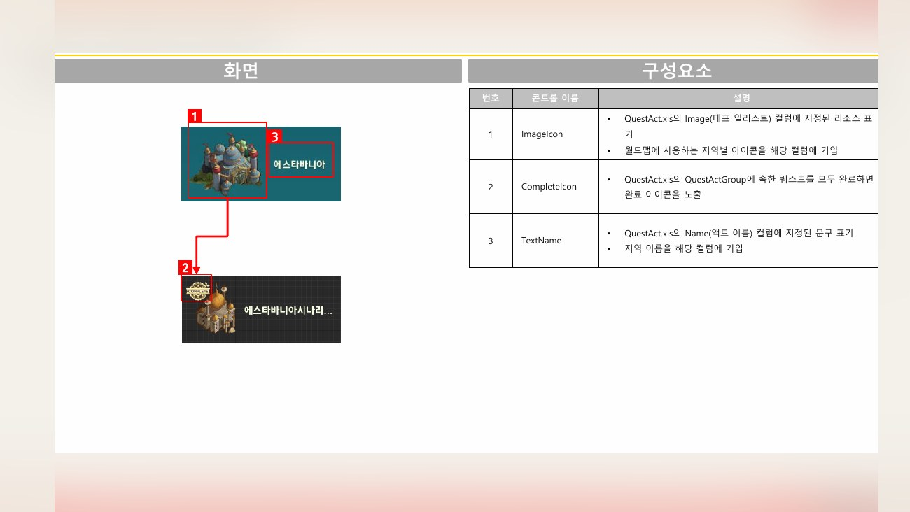
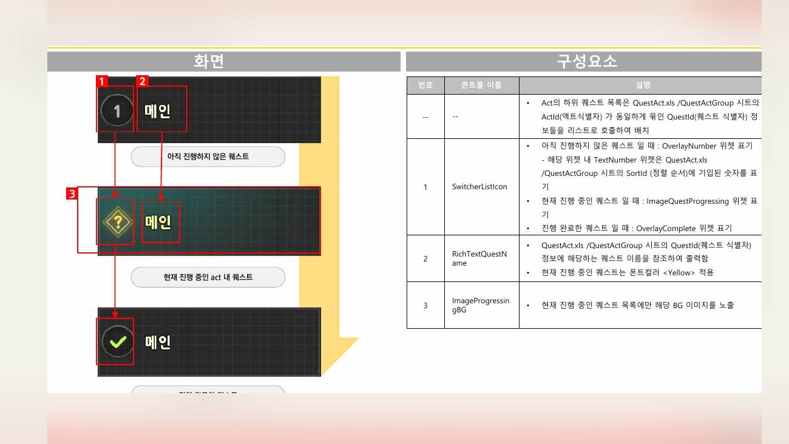
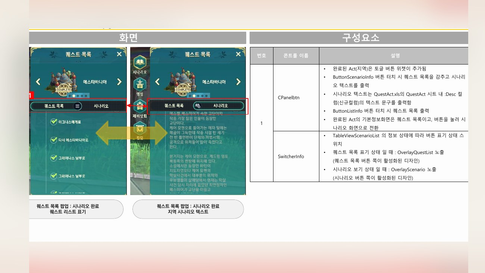
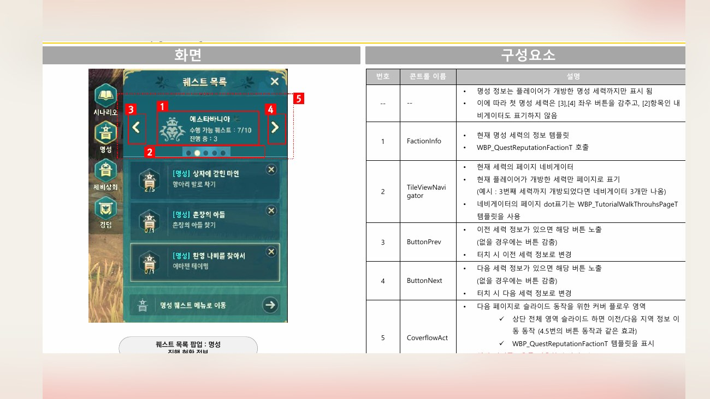
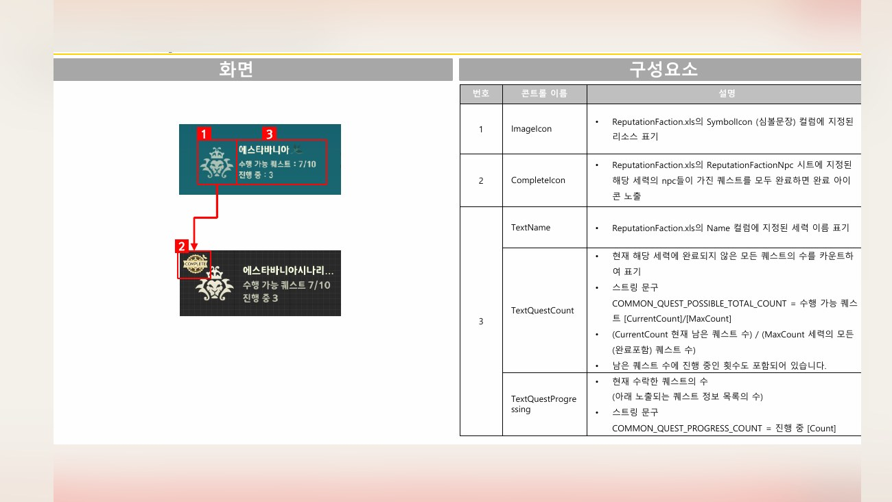
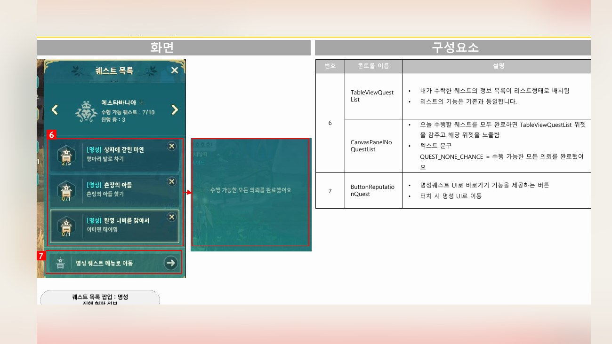
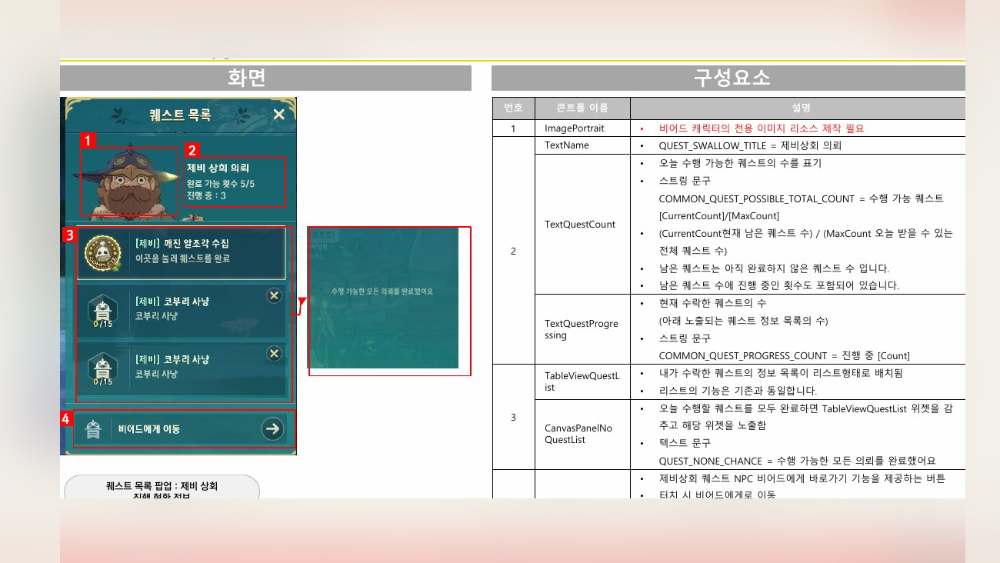
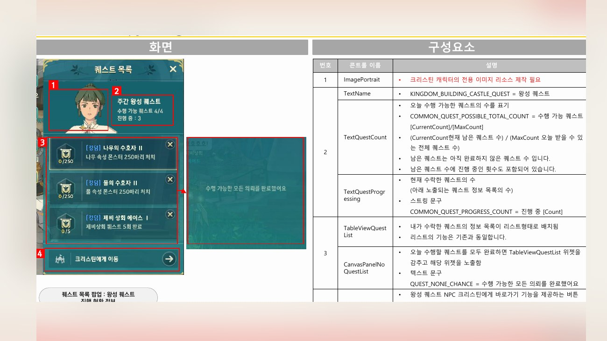